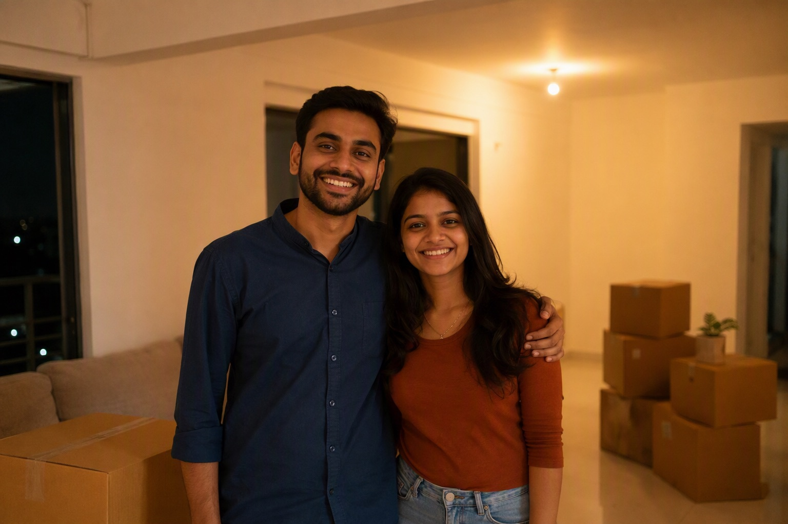

Ceiling Fan Buying Guide: BLDC vs Ordinary, Sweep Size and Price Bands

Ceiling fans are the appliance Indian homes run the most hours per year, which makes them the one place where a small efficiency difference compounds into real money.
BLDC versus ordinary induction fans
| Ordinary induction | BLDC | |
|---|---|---|
| Power draw (1200mm) | 70–80 W | 28–35 W |
| Approx price | ₹1,300 – ₹3,000 | ₹2,800 – ₹6,500 |
| Remote / speed control | Wall regulator | Remote, usually with timer and modes |
| Inverter backup friendly | Poor | Excellent — runs far longer per battery charge |
| Noise | Slight hum at low speeds | Generally quieter |
| Repairability | Any local technician | Needs brand service for the controller |
Does the payback actually work?
Take a fan running 10 hours a day for 8 months a year. The difference between 75W and 32W is 43W, which is about 105 units a year per fan. At Bangalore domestic tariffs that is roughly ₹700–₹900 a year saved per fan. On a ₹1,800 price premium, payback lands around two to two and a half years — and with five fans in a house, the household saves meaningfully every year after that.
The case is strongest where fans run long hours and where there is an inverter, because a BLDC fan more than doubles backup runtime. It is weakest in a guest room used twice a year, where an ordinary fan is the rational purchase.
Sweep size by room
| Room size | Sweep |
|---|---|
| Up to 55 sq ft | 900mm |
| 55–110 sq ft | 1200mm — the standard Indian size |
| 110–160 sq ft | 1400mm |
| Above 160 sq ft or high ceilings | 1400mm+, or two fans |
Two smaller fans in a large hall move air more evenly than one oversized fan, and they let you run only half when the room is half occupied.
Read air delivery, not just watts
Air delivery is measured in cubic metres per minute and is the number that tells you whether the fan actually cools. A 1200mm fan should deliver around 210–230 CMM. A very low-wattage fan with poor air delivery is not efficient — it is simply weak. Look at the ratio: CMM per watt is the honest efficiency measure, and BIS star ratings are based on it.
Practical checks before buying
- Downrod length — the blades should sit roughly 2.4 to 2.7 metres above the floor. High ceilings need a longer downrod, and false ceilings need a shorter one.
- Canopy and hook compatibility — the ceiling hook must be properly embedded, especially for heavier fans.
- Regulator type — BLDC fans use their own remote or controller and do not work with an ordinary wall regulator, so plan the switch point accordingly.
- Warranty on the controller, not just the motor. The controller is the part that fails on a BLDC.
- Blade material — metal blades hold their pitch; very cheap plastic blades can warp in Bangalore's summer attic heat.
What to buy
For rooms in daily use, and especially in homes with an inverter, BLDC is the better purchase despite the higher upfront cost. For occasional rooms, a good ordinary 1200mm fan from a reputable brand is entirely sensible. In both cases buy from a source that will honour the warranty — fan warranty claims are common, and a fan bought from an unauthorised seller is a warranty you cannot use.
Check what your fans and lights add up to with the load calculator.
Send your list on WhatsApp for an exact quote within 60 minutes. Approximate ranges on this page are for planning; WhatsApp 88676 76700 for today's firm rate, with no pressure to buy.
Frequently asked questions
Is a BLDC fan worth the extra cost?
What sweep size ceiling fan do I need?
What is air delivery in a ceiling fan?
Do BLDC fans work with normal wall regulators?
How much do ceiling fans cost in Bangalore?
What should I check before installing a ceiling fan?
Ready to order for your home?
Upload your wiring list for an instant quote — 100% original material, free next-day delivery across Bangalore.